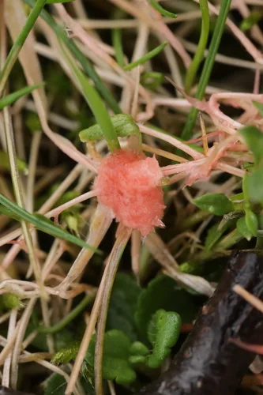

Pink threads on lawn grasses
Pink strands cling to dying grass blades in irregular pale patches.

What to check first
Find a patch where discoloured grass meets green grass. Part the blades gently and look at individual tips, particularly when there is dew. Tiny pink to coral-red threads extending from affected blades are more useful for identification than the overall colour of the patch.
How to tell similar problems apart
Check several blades in different patches. Cottony material on the surface can be hard to interpret, and pink patch and other turf problems can resemble red thread. A bare area where feet or mower wheels regularly pass should also be examined for compaction and mechanical wear.
What to do now
Review mowing height, irrigation timing and recent fertilising. Slow-growing turf can show the problem more strongly, but this does not mean a heavy dose of nitrogen is appropriate. Base feeding on the grass type and local guidance. Avoid watering in a way that keeps blades wet through the night.
What to check next
Watch the green growing points near the base. If new blades come through normally, the pale tips may gradually disappear with mowing. If patches enlarge or the plants pull out easily with damaged roots, take a sample spanning both green and affected turf for diagnosis.
Inspect individual grass blades at dawn
Take several blades from the transition between green turf and a straw-colored patch. Thin pink or red projections extending from blade tips are easier to see when dew is present. Note whether the grass crowns at soil level remain alive before deciding a thin patch needs reseeding.